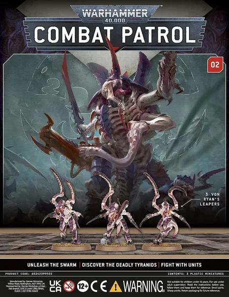

Combat Patrol Magazine 2 - Von Ryan's Leapers
Von Ryan's Leapers
Von Ryan's Leapers are a swift, agile, and lethal Tyranid bioform, classified as Vanguard Creatures. These ultimate ambush predators are designed for stealth and sudden, devastating assaults on their prey. Unlike the often solitary Lictors, Leapers are formidable pack-hunters that emerge in groups to overwhelm and eviscerate their enemies.
Genetically, Von Ryan's Leapers combine elements from Hormagaunts and Lictors, creating a highly effective melee threat. Their remarkable speed and agility are aided by balancing tails. They are particularly lethal in dense terrain, where they lie in wait like "living mines," bursting forth in a "murderous frenzy" when the optimal moment to strike arrives.
Build Instructions
The instructions can be found here for the Von Ryan's Leapers.